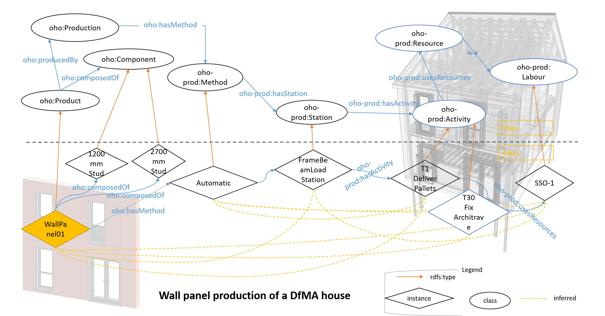

Abstract
A new domain ontology, Offsite Housing Ontology (OHO), is presented here. OHO facilitates the semantic integration of offsite construction knowledge, enabling it to be used in DfMA practice. It semantically defines offsite construction domain terminology and relationships, describing a core vocabulary. This supports a unified model, required for efficient collaborative design management, while improving existing data flows. The efficiency and effectiveness of the OHO approach is demonstrated in a real-world DfMA scenario through the development of a Knowledge Based Engineering tool to automate life cycle cost and $CO_2$ emissions estimation. As OHO is extensible, this approach can be adapted and extended to accommodate a very wide range of offsite housing, delivering important optimization and automation benefit for sustainable life cycle solutions.
OHO has two modules: OHO-Cost for estimating life cycle cost of a OHO house and OHO-Pro for representing the production line of each product of the OHO house.
All the modules of OHO are found in this OWL file: OHO Modules and more information about the projects is in this Link .
SPARQL query examples are listed here Link and more can be tested in the same endpoint.
